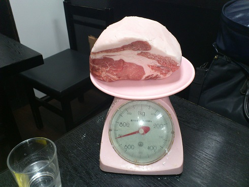

おいしいごはん！

boy/girl
Size
Price
boy
S
150
M
200
L
250
girl
S
250
M
300
L
350
free for kids
- ホーム - このサイトについて - プロフィール
今日のおいしいごはん
おいしいごはん #12
至高のTKG
材料
卵
しょうゆ
ごはん
手順
まぜる
かける
定義
TKG
TAMAGO KAKE GOHAN
新着のおいしいごはん
おいしいごはん #32
はもしゃぶ
おいしいごはん #31
スリランカカレー